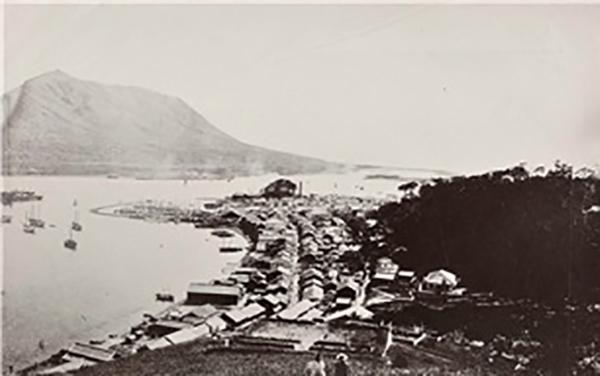
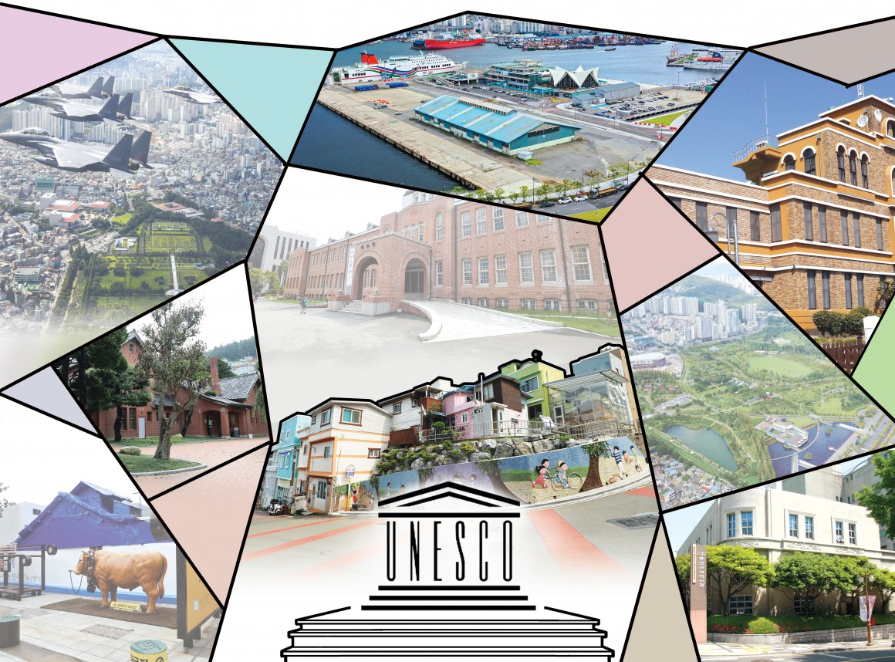

CHAPTER 05
개항과 근대 도시의 태동 (1876년 ~ 1945년)
부산의 역사는 약 2만 년 전 구석기 시대부터 시작됩니다. 당시의 부산은 지금보다 해수면이 낮아 일본 열도와 육지로 연결되어 있기도 했으며, 인류는 이동하며 사냥과 채집을 이어갔습니다.
- 항구의 근대화초량항 일대를 중심으로 매축 공사가 진행되었고, 대륙 진출을 위한 관문으로서 거대한 부두 시설이 들어섰습니다.
- 교통의 요충지905년 경부선 철도가 개통되면서 부산역은 한반도 남쪽의 종착역이자 대륙으로 향하는 시작점이 되었습니다.
- 도시 구조의 변화일본인 거주지인 '전관거류지'를 중심으로 근대적인 건축물, 전차, 가로등이 설치되었으며, 이는 오늘날 광복동과 남포동 일대의 원도심 골격이 되었습니다.

CHAPTER 06
피란 수도와 성장의 발판 (1950년 ~ 1960년대)
광복 이후의 부산은 한국전쟁이라는 비극 속에서 대한민국의 '최후의 보루'이자 '임시 수도'**로서 중추적인 역할을 수행했습니다.
- 피란민의 삶과 공간 전국 각지에서 몰려든 피란민들로 인해 산비탈을 따라 '판자촌'이 형성되었습니다. 현재의 감천문화마을이나 우암동 소막마을 등이 이 시기의 아픈 역사를 간직한 곳입니다.
- 국제시장과 경제의 중심 원조 물자와 군수물자가 유통되던 국제시장은 당시 대한민국의 가장 큰 상권이었으며, 전쟁의 폐허 속에서 경제를 지탱하는 핏줄 역할을 했습니다.
- 정치와 문화의 용광로 약 1,023일 동안 대한민국의 정치, 행정 기능을 수행하며 다양한 지역의 문화와 음식이 섞여 부산 특유의 개방적이고 역동적인 기질(밀면, 돼지국밥 등)이 완성된 시기입니다. 관련 사이트 방문하기